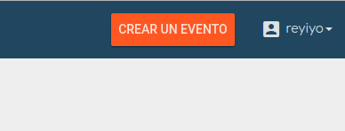

Crear Evento
Cada sede de FLISoL es lo que llamamos un evento. Cada sede deberá crear su evento en eventoL. Para esto, es necesario estar autenticado.
Una vez autenticado, hacer click en el botón "Crear Evento".

Datos
Para crear un evento, serán solicitados una serie de datos que se describen a continuación:
-
Nombre del evento: Es el nombre de la sede. Por ejemplo: CABA, Córdoba, Avellaneda, etc. -
Cuándo será el evento: La fecha en la que el mismo se llevará a cabo (este año, 22 de abril). La plataforma soporta múltiples fechas para un mismo evento. Suponiendo que el evento se lleve a cabo durante más de un día, se pueden agregar todas las fechas del evento aquí. Actualmente no soporta múltiples lugares (un día en un lugar y otro día en otro). Por lo que en este caso, lo que recomendamos es crear 2 evento distintos y ponerle el día en el nombre (SEDE - Virnes, SEDE - Sábado por ejemplo). -
Elige una URL: Esto es la porción de URL que linkeará directamente a la página principal de tu sede en eventoL sin tener que buscarlo en el índice de todos los eventos. Por ejemplo, si la url que ingresas es "cordoba", podrás compartir el link "https://eventol.flisol.org.ar/event/cordoba" para que las personas ingresen directamente a tu evento. -
Dónde te pueden contactar?: Acá se requiere una dirección de email a la cual van a llegar los mensajes de contacto que se envíen a través de la página. También es a donde te contactaremos por cualquier inconveniente con tu evento o avisos importantes respecto de la plataforma. -
Dónde puede seguir tu evento la gente?: Acá se puede agregar contactos de redes sociales de tu evento. Si ves que falta alguna red social (Tipo de contacto) podés hacernoslo saber cargando un issue en github y la agregaremos a la brevedad. -
Dónde será el evento?: Acá hay un campo para buscar lugares y direcciones y cuando selecciones uno, se mostrará en el mapa de abajo. Te sugerimos que busques primero por el nombre del lugar (por ejemplo, "UTN" o "centro cultural xxx") ya que suele dar más información que una dirección. Puedes también buscar primero el lugar que quieras ingresar en google maps para ver la información disponible del lugar. -
Cuál es el último día para enviar propuestas de actividades?: Una actividad es por ejemplo una charla o taller. Si en tu evento recibís propuestas de actividades de cualquier persona (call for charlas) y las querés administrar a través de eventoL, esta fecha se refiere al último día que tiene la gente para enviar sus propuestas. (Luego de esa fecha, sólo el organizador del evento puede crear actividades). -
Quieres usar tu propia página principal?: ADVERTENCIA: Si rellenas este campo, no podrás usar eventoL para administrar tu evento. Si tenés una página de tu evento y no querés usar eventoL, podés de todas formas crear el evento y poner la URL completa de tu página en este campo. Cuando la gente vea tu evento en la página principal de eventoL y haga click, lo redirigiremos a tu página. Aclaración: tenemos una forma no-documentada aún de usar las funcionalidades de eventoL con tu propia página principal. Si necesitás hacerlo, no dudes en contactarnos y te decimos cómo. -
Ingresa todos los detalles que puedas acerca de tu evento: Este es un campo de texto libre, donde puedes escribir todo lo que creas necesario acerca de tu evento (hora, lugar, qué hay que llevar, etc.).
Organizador
La persona que crea el evento, es automáticamente su organizador. Por lo que pedimos que sólo crees el evento del cual sos el organizador o coordinador. Luego podrás agregar más personas a la organización de tu evento.
Edición del evento
Si más tarde necesitas cambiar cualquiera de los datos ingresados anteriormente, cualquier organizador puede cambiar los datos de su evento. Al entrar a la página de tu evento, en la barra superior encontrarás un link que dice "Administrar Evento" y ahí podrás editar lo que necesites.
También podrás administrar cualquier dato de tu evento a través de la interfaz de administración en https://eventol.flisol.org.ar/admin